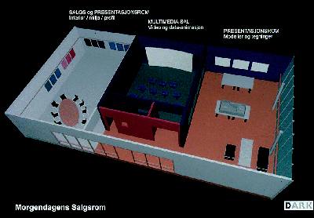

![[Forrige artikkel]](/me/ts/ne/gifs/prev.gif)
![[NE hjemmeside]](/me/ts/ne/gifs/ne-small.gif)
![[Neste artikkel]](/me/ts/ne/gifs/next.gif)
Av Egil Wettre-Johnsen
Dette fremholdt markedsdirektør Martin Traaseth i Eiendomsspar/Victoria Eiendom da han på Eiendoms-Consults seminar på SAS-hotellet gav tilhørerne innblikk i en ikke alt for fjern fremtid. Han gikk så langt som å si at eiendomsbransjen allerede nå må ta i bruk . Den største fallgruben aktørene i eiendomsbransjen kan falle i, er ikke å følge med på utviklingen innen Virtual Reality og visualiseringsteknologi.
En hoderystende Stein Haugbro i Orkla sa i en kommentar til NæringsEiendom etter seminaret at også Traaseth må akseptere at man ikke kan selge skinnet før bjørnen er skutt. Man kan ikke forhåndsselge et prosjekt før man vet hvordan det vil komme til å bli. Kundene vil da fort føle seg forsmådde. For Skøyens del er bebyggelsesplanen nettopp innlevert til myndighetene.
I følge Haugbro er det lett å få laget presentasjonsprogrammer, og antyder således at den store utbyggingen på Skøyen vil få en helt annen og tyngre synlighet i markedet enn det som er vist tidligere.
Fordi de satser på visualisering og aktiv markedsføring, vil vinnerne i fremtidens eiendomsmarkedet klare å få undertegnet leiekontrakter allerede på prosjekteringsstadier og endog før reguleringen er stadfestet. Middelmådighetene vil få tegnet kontrakter i anbuds- og igangsettingsfasen av nybygg og rehabiliteringer, mens taperne først vil klare å kapre kontrakter etter at bygget er innflyttingsklart.
Til NæringsEiendom opplyser Traaseth at Eiendomsspar/Victoria Eiendom som ledd i sin posisjonering overfor fremtidens krav til aktiv presentasjon og markedsføring, har lagt alle sine eiendommer i DAK. Dagens digitaliserte DAK-oppmåling sikrer full oversikt over alle arealer og hva som er fellesarealer - også når det foretas forandringer i bygningsmessige forhold eller i leieforhold. Dette sikrer også leietakerne mot at de betaler for større arealer enn det de faktisk skal. Alle endringer og ombygginger kan dokumenteres.
Dette er 3-delt og består av et salgs- og presentasjonsrom for interiører, miljø og profil og et tilsvarende rom for presentasjon av modeller og tegninger. Mellom de to rommene er det en egen multimedia-sal der det vises video og dataanimasjoner. Det store poenget er at alle presentasjon vil foregå interaktivt, det vil si at kunden selv kan påvirke valg av løsninger og kan utprøve løsningsvarianter og hvilke konsekvenser disse har.
Fornøyde leietakere er utleierens beste referanser. For å få til det må utleieren bl.a. sørge for at det foreligger forståelige kontraktsbetingelser, at fellesutgiftene og servicenivå er definert og at det er gjennomtenkte interiør- og møbelløsninger.
Traaseth understreket at utleie er teamarbeid. Aktiv utleie kraver også høy kvalitet på salgs- og reklamemateriell. I dagens konkurransesituasjon nytter det ikke å komme drassende med en dårlig stensilkopi.
Stikkord for fremtidens vinnere er, i følge Traaseth, interaktivt salg der man på en realistisk måte får vurdert beliggenhet, standard, kvalitet, tilhørighet og profil. Dessuten er et nødvendig at den potensielle leietakeren har tillit til utleieren. De arkitektfirmaer som ikke kaster seg på teknologibølgen og kan bidra med systemer for interaktivt salg, vil forsvinne, advarte han.
I følge Veritas og ABB vil internasjonal miljøsertifisering bli like viktig som ISO 9000 i dag er for bedrifter som ønsker å hevde seg i den internasjonale konkurransen. Gjennom sertifiseringen dokumenteres kvalitet og miljøvennlighet, samtidig som de bidrar sterkt til bedrifter og konserners markedsprofil.
Martin Traaseth advarte seminardeltakerne om at slike bevisste selskaper som ABB og for så vidt Veritas, er en leietakergruppe som krever langt større og tettere oppfølging fra utleiers side.
Profesjonelle leietakere krever profesjonelle utleiere.
Bilder til artikkelen (40 til 120 kb):

B) Dagens teknologi kan gjøre kunstige datasimulerte interiører svært så realistiske. (Datasimulert bilde, publisert med tillatelse fra Dark Arkitekter)
C), D) og E) Gjennom datasimulering av interiører kan man møblere og lyssette som man ønsker. (Datasimulerte bilder, publisert med tillatelse fra Dark Arkitekter)
F), G) og H) Datasimulerte eksteriører kan lyssettes og endres etter behov, slik at kunden får dokumentert hvordan det vil bli i virkeligheten. (Datasimulerte bilder, publisert med tillatelse fra Dark Arkitekter)
{kind=link}
{kind=link}
{kind=link}
{kind=link}
{kind=link}
{kind=link}
{kind=link}